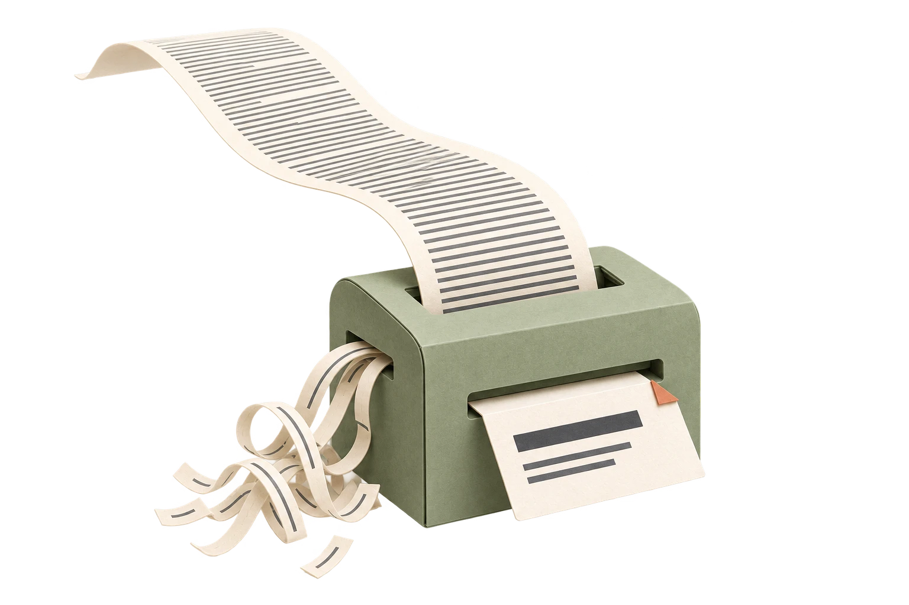
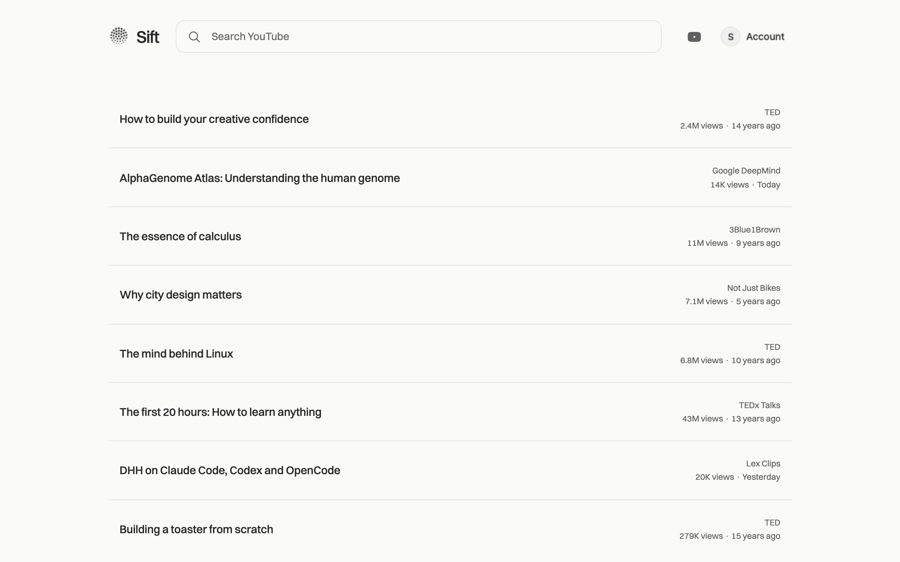

Sift out the noise.
Get the substance of a video without watching every minute.
A calm, text-first YouTube.
Become an early testerSix months of Sift Pro, free. First 1,000 activations.
For Chrome on desktop. Early-access details


Get the substance of a video without watching every minute.

A calm, text-first feed. You decide what deserves a watch.

Ask questions. Get clarity. Follow your curiosity.
The road ahead
The same calm. Wherever you browse.
A text-first feed. Video summaries. A conversation with every video.
Chrome on desktopSift for Safari on iPhone, iPad, and Mac.
In the browserLess scrolling. More of what you came for.
Instagram on the webKeep the connections. Leave the distractions.
Facebook on the webNext steps, not deadlines. Future features may change as we learn.
For our first 1,000 activations
Six months of Sift Pro, on us.
Get the gist. Ask questions. Tell us what could be better.
Free to install. No card required.
Install Sift, then activate Pro in Settings with Google. Your six free months start at activation. One offer per person, for the first 1,000 activations. Installing alone doesn't reserve a place.
Video summaries, chat, and Pro features that arrive during your six months. Includes 400 summaries and chat answers combined per calendar month, shared across your devices.
Choose a paid plan or keep using Sift for free. We'll share pricing at least 30 days before your offer ends. You won't be charged automatically.
Sift currently works on desktop Chrome. Safari support for iPhone, iPad, and Mac is next. It will work on websites in Safari, not inside the YouTube or Instagram apps.